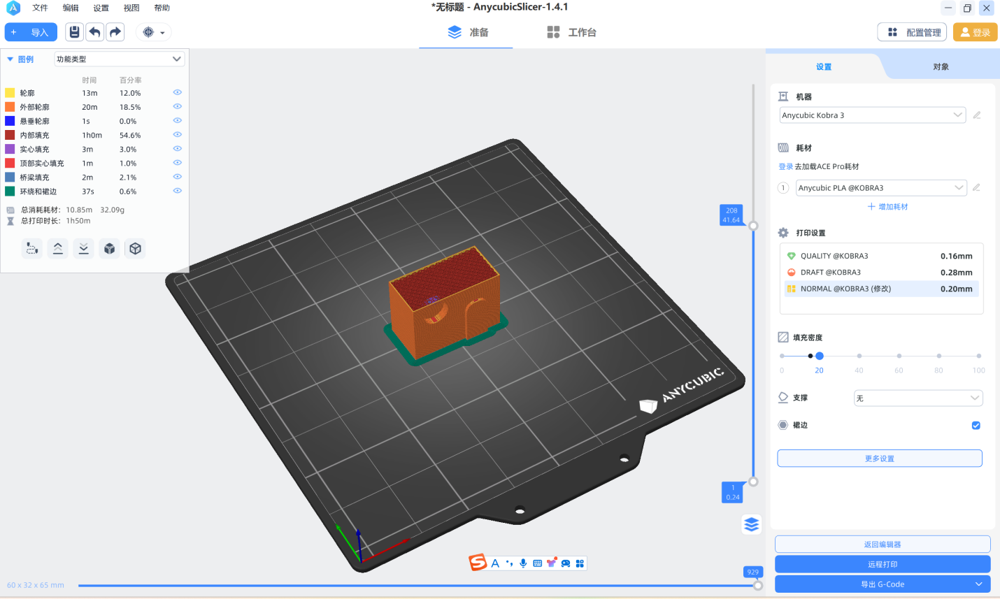

3D printer
1.3D printer new reseach or application
1-1 Process support breakthrough：
3D printing process non-destructive evaluation 90% detection rate
The first study on 3D printing technology published in Science in 2023
was published on January 5. A research team led by Tao Sun, associate
professor of Materials Science and Engineering at the University of
Virginia, has made the discovery that a method to detect keyhole
generation by integrating experimental data, multi-physics simulation,
and machine learning is able to capture the unique thermal features
associated with keyhole generation with sub-milliseconal time resolution
and a 100% prediction rate.
Researchers at Oak Ridge National Laboratory have developed a way to
combine post-inspection data from printed parts with information
collected by sensors during the printing process, and the combined data
teaches machine learning algorithms to identify defects in products.
This new method achieves a 90% detection rate, which is consistent with
the defect detection probability of traditional evaluation methods, thus
saving time and reducing costs.
1-2 New technology:
Unsupported metal 3D printing
In recent years, through years of continuous research and development
and repeated trials, Jinshi 3D core technology team, under the
leadership of chief scientist Professor Yang Yongqiang, has made
important breakthroughs in the field of unsupported metal 3D printing:
Breaking the 45° limit and developing a universally applicable
unsupported low Angle forming method to achieve the effective forming of
industrial parts in large overhang areas, has successfully printed
unsupported metal impellers and other samples with the lowest Angle of
15°, providing application solutions for many industries.
In February 2024, Professor Yang Yongqiang and Professor Wang Di of
South China University of Technology, the core scientific research team
of Jinshi 3D, jointly published an invited paper entitled "Research
on the Method and process of Laser Selective Melting Forming of
Low-angle Unsupported Structures" in the journal of China Laser.
The forming mechanism, the surface quality of the sample and the
applicability of the forming method of unsupported metal printing were
investigated, and the actual industrial parts were used for printing
verification.
2.Use slice software to setting parameter



3.Use 3D printer to manufacture it
Select gcode
Draw gcode line chart
...
填充密度：20%
填充图案:3D蜂窝
裙边类型：内部和外部裙边
速度：轮廓：70mm/s 填充：200mm/s